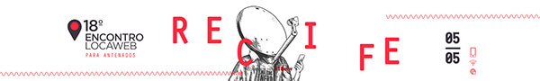
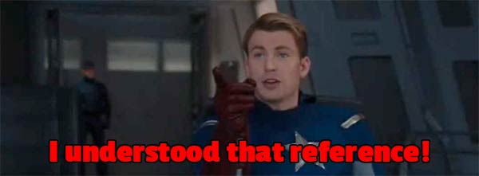
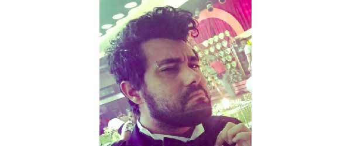

Aconteceu no Cinemark do Shopping Riomar do Recife, no dia 05/05/16, o 18º Encontro Locaweb. Iniciativa da Locaweb que reúne profissionais da área digital para debater novidades sobre Marketing e Desenvolvimento web.

Falando assim limita muito o escopo do evento. Dessa vez procurei fazer algo diferente e não fui para a sala Dev. Assisti as palestras focadas para o pessoal de Marketing, e mesmo sem sacar muita coisa posso dizer que foi uma experiência fantástica. Pela primeira vez vi autoridades falando sobre como expandiram seu negócios, técnicas novas utilizadas no mercado e muita coisa boa que deixou minha cabeça fervilhando de ideias.
Vale a pena reforçar aqui. Se você nunca buscou participar de eventos de outras áreas, não perca tempo e vá. A gente passa tanto tempo mergulhado em livros, vídeos, podcasts sobre a nossa área que terminamos fechando nossas cabeças para o que está acontecendo fora da caixa.
Não é pra a partir de agora, abandonar os eventos da sua área. Apenas viva novas ideias, novas linguagens (falo de termos, não de programação), novas ideias, isso soma muito ao que já fazemos no dia a dia.
Sobre o Evento
➤ Pontos negativos
Foram pouquíssimos pra falar a verdade. Eu não sabia que seria no cinema, tanto que abdiquei do computador pra levar um caderno. Mas isso não foi um ponto negativo, longe disso, mas o fato do equipamento falhar muito no momento das perguntas dos participantes.
O refletor virado para a plateia chegou a incomodar em certos momentos, mas nada que causasse revolta.
Os organizadores perderam a mão na quantidade do público, talvez eles não esperassem mais de 500 pessoas! Isso num dia de quinta feira em um evento que durou o dia inteiro. Ninguém esperaria por isso!
A sala Dev tinha menos pessoas e a de Marketing estava lotada, com pessoas assistindo as palestras em pé e sentadas no corredor. Nada mau que a organização agiu rápido, e se desculpou na hora com todos, oferecendo 3 anos gratuitos dos próximos eventos para os afortunados que chegaram atrasados e estavam acomodados no chão ou em cadeiras improvisadas. Palmas para a Locaweb.
Embora aquela cadeira do cinema que eu estava sentado, era terrivelmente desconfortável… ;)
➤ Pontos positivos
Começar pela localização. Pra mim foi ótimo, foi tão perto que poderia ter ido caminhando se quisesse. O evento acontecer no cinema foi uma bela surpresa, mas como disse antes, a sala ficou lotada e tivemos a promessa que no próximo ano eles alugariam salas maiores.
Tem que ser assim mesmo, o evento vem crescendo, problemas aparecem, mas vimos uma grande disponibilidade do pessoal em se mostrar disposto a melhorar.
O host do evento foi ninguém mais, ninguém menos do que o “Tio” Erick, fantástico como sempre. Os palestrantes, pelo menos os que vi, foram grandes acertos e os assuntos, pra mim que entendia muito pouco, foram sensacionais. O coffee break foi absurdo e ainda teve duas vezes! :)
➤ Palestras
Fernando Cirne - Locaweb
Panorama do E-Commerce | Mobile | Novas mídias
Falou sobre ecommerce e relação entre vendas varejo e online. Mostrou dados e apresentou sua correlação com a economia atual. Falou sobre as quatro empresas da Locaweb e como a empresa vem expandindo seus negócios. Foi uma palestra introdutória e a abertura oficial do evento.
Welington Sousa
Brain Marketing - Atenção, Memória e Emoção
Abordou técnicas e descobertas de neuromarketing sobre atenção, memória e emoção. Também falou sobre o comportamento de compra e seus estágios na vida do consumidor.
Explicou sobre Neuromarketing e Behavioral Marketing, assuntos interessantíssimos, que deixei anotado para ler com mais atenção no futuro.
Assuntos tão importantes quanto saber como a mente funciona quando você fala que a vaca bebe leite.

Welington abordou de forma simples e com bom humor um assunto bem complexo. Tudo devidamente explicado e a inserção dos vídeos como complemento me ajudou bastante a fixar os conceitos.
Felipe Schepers - COO da Opinion Box
Inovação x Crise: As oportunidades disfarçadas em tempos difíceis
Uma visão sobre a crise no mercado e a busca de inovação. A Opinion Box fez uma pesquisa exclusiva para o Encontro Locaweb com a participação de mais de 1.000 empresas em todo o país, basicamente buscando entender sobre o quanto uma empresa entendia sobre o workflow do Marketing, e como o digital podia aplicar técnicas para encontrar as oportunidades escondidas em meio à crise.
O Felipe é bem articulado e conseguiu passar bem as informações. Embora tenha sido uma palestra mais densa, com muitos dados, foi bem dinâmica e em momento algum se mostrou cansativa. O pouco tempo da palestra ajudou também.
Ricardo Pomeranz - Co-Presidente Rapp BRasil
A nova mídia Online
Palestra muito rica, sobre plataformas digitais. Google, Facebook, YouTube, Portais, GDN, DSP. Ricardo Pomeranz trouxe um assunto que, acredito que pouca gente ali conhecia. Pelo menos foi o que senti, contudo posso estar completamente equivocado.
Com a evolução de mídias online, qual é aquela que mais agrega à seu produto/ serviço na hora da divulgação. Será que pagar ao Facebook sem tentar entender aonde seu público está, é uma boa sacada? Pagar (caro) por palavras-chave no Google, sem se preocupar com qualidade, é garantia de sucesso?
André Siqueira - Co-fundador da Resultados Digitais
Inbound Marketing: Criando um processo sistemático para aquisição de clientes
Marketing pra gerar oportunidades e calcular o ROI mostrando que o Marketing não é centro de custo. Já havia ouvido falar sobre Inbound Marketing, mas nunca tinha lido nada sobre. André mostrou como aplicar na sua estratégia.
Embora tenha entendido pouca coisa, fiquei interessado sobre o assunto e é outro que pretendo ler com mais calma à frente.
Lúcio Cordeiro
Estratégia de penetração do mercado
Infelizmente teve problemas pessoais e precisou deixar o evento antes de palestrar.
Maurício Cid - Não Salvo
Desafio Aceito: Conteúdo viral a favor das marcas

O que o Cid faz, quando não está zoando o mundo e o próprio pai?
Palestra (quase um stand up comedy) sobre sua história, a criação do Não Salvo e a consequência de seus atos, e o poder incontrolável de um viral. Palestra que me ajudou a descontrair a mente, que já estava ficando quente de tanto assunto denso e novo. Não sei se o pessoal da área teve essa mesma sensação.
Martha Gabriel - Mestre e PhD em artes (Absurdo o que essa mulher faz!)
Growth Hacking: O que vem por trás das empresas do Vale do Silício
Empresas que focam em crescer vem tendo mais resultados em empresas que focam em ganhar dinheiro. Mas por que isso? Como o Growth Hacking pode ajudar nisso? Originário do Vale do Silício, esse tipo de estratégia alavancou o crescimento de empresas como Airbnb, Dropbox, Twitter, entre outras.
Palestrante de alto nível, muito bem preparada. De um estilo elegante e didático. Falando sobre um assunto tão complexo, de uma forma tão simples que faz você ter vontade de chegar em casa e criar uma empresa só pra aplicar aquilo.
Fiquei assustado com o que essa mulher fez na vida já. PhD, professora, pós graduada em Marketing e Design, palestrante internacional, escritora, blogueira… Se ela dissesse que assistia seriados no Netflix eu teria levantado e ido embora.
Sério.
Conclusão
Ainda teve a sala Dev que não assisti nenhuma palestra, embora tenha tido palestrantes fantásticos, alguns eu já tinha visto como o Sérgio Lopes e o Jean Carlo Emer e os temas foram interessantes, mas não posso falar muito. Se você foi e puder comentar um pouco do que achou, deixe ai nos comentários, vamos manter esse post completinho.
Primeiro evento da Locaweb que fui, e pretendo ir no próximo ano se tiver oportunidade. Se tiver as novidades prometidas, será ainda mais fantástico do que foi esse ano.
E pessoal, foi R$100,00 o ingresso. Consegui cupom com o parceiro Rafa Ramos e paguei 50%. Depois de fazer a inscrição ainda recebi um e-mail com 70% de desconto. Ou seja, era só economizar um Club House da McDonald’s.
Parabéns a Locaweb e parceiros que fizeram o evento acontecer.